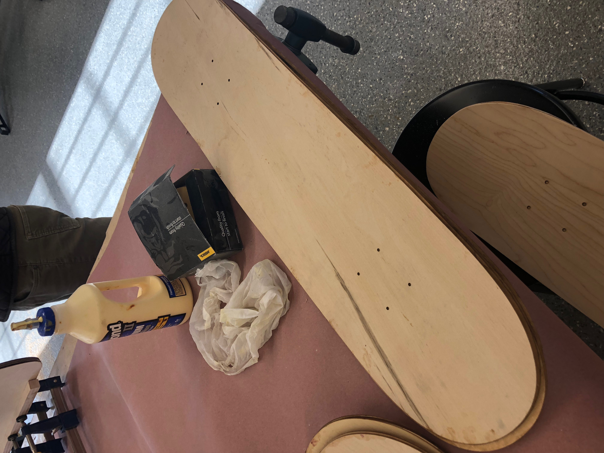
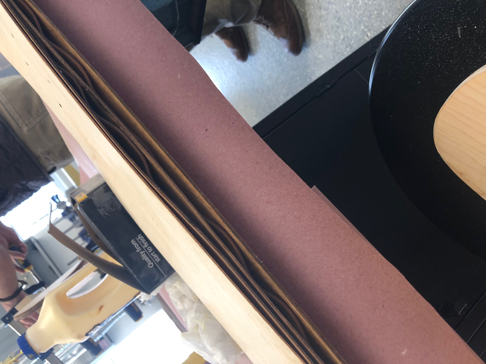
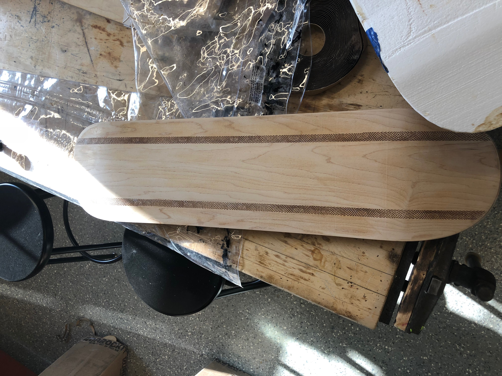
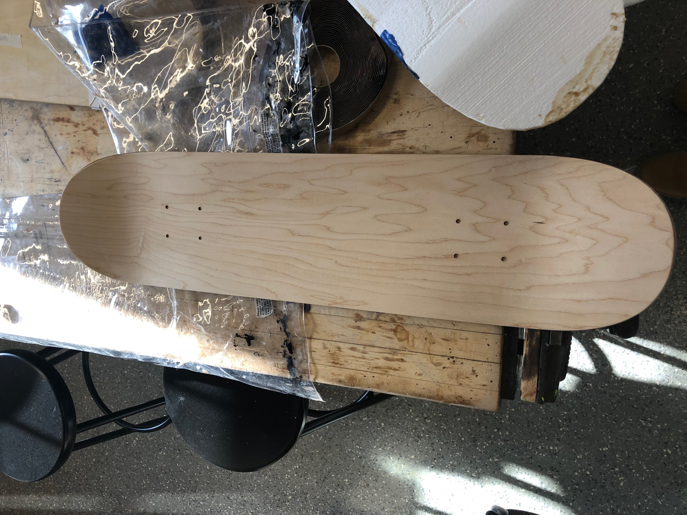

Rotation 7:
Project Description:
Vacuum Forming and Lamination - Skateboards!
The process of making the skateboard was stressful because we only had eight minutes to glue the pieces together and seals it in the bag before the glue would dry. I ran into problems with my skateboard because there was a hole in my bag, so it did not form right and Mr. Gerber had to give me an old skateboard. Below are pictures of the failed attempt, you can see that due to the glue not drying properly, the wooden planks are wavey.


Below are the pictures of the skateboard I was given after I sanded it down and smoothed the edges.


To create the design for my skateboard, I used Photo Shop. I imported a picture of a cat from a brand I like and edited it so that it would fit to the skateboard. Then, I put the file on Corel Draw to export is as an eps and printed the sticker.